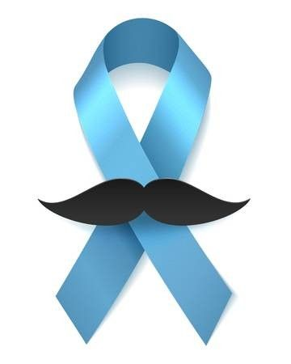
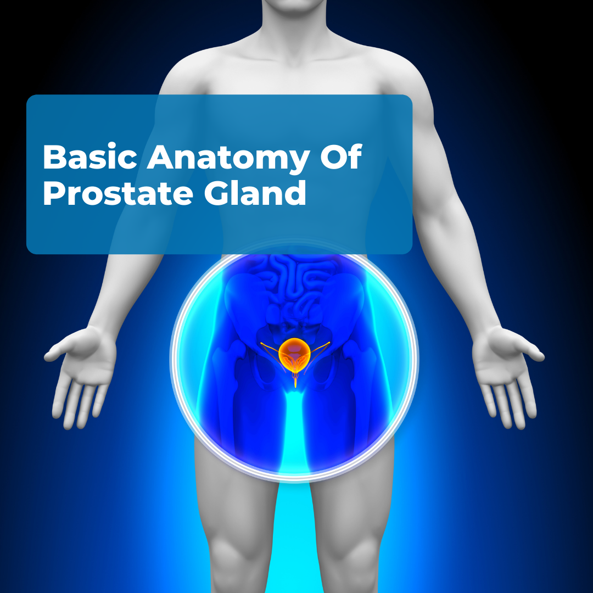
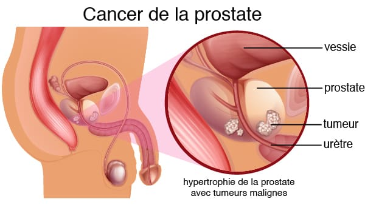

Novembre bleu
la santé masculine avant tout
Informer vous et soutenez la lutte contre les cancers masculine
Pourquoi novembre Blue ?
Novembre bleu, également connu sous le nom de Movember, est une campagne caritative mondiale lancée en 2003 en Australie par la Movember Foundation.
Le but principal de cette campagne est de sensibiliser les hommes à leur santé, en particulier aux cancers masculins comme le cancer de la prostate et le cancer des testicules.
Les participants, appelés Mo Bros, se laissent pousser la moustache pendant tout le mois de novembre pour attirer l'attention sur ces maladies et encourager les dons pour la recherche médicale Cette campagne a gagné en popularité et est désormais organisée dans plus de 20 pays à travers le monde. En plus de la sensibilisation aux cancers masculins, Movember met également l'accent sur la santé mentale des hommes et la prévention du suicide1. Pour plus d'informations, tu peux consulter les sources suivantes :
Qu'est-ce que la prostate ?
La prostate est une petite glande de l'appareil reproducteur masculin, située juste en dessous de la vessie et devant le rectum. Elle a la taille d'une noix et entoure l'urètre, le canal qui transporte l'urine et le sperme. Son rôle principal est de produire un liquide qui entre dans la composition du sperme, facilitant le transport des spermatozoïdes.
Qu'est-ce que le cancer de la prostate ?
Le cancer de la prostate est une maladie qui se développe lorsque des cellules anormales se forment dans la glande prostatique et commencent à se multiplier de manière incontrôlée. Il s’agit de l’un des cancers les plus fréquents chez les hommes, notamment après 50 ans.
Les symptômes à surveiller !

Le cancer de la prostate évolue souvent silencieusement aux premiers stades. Cependant, certains signes peuvent apparaître, notamment :
- Problèmes urinaires :
- Difficulté à uriner ou faible débit urinaire.
- Besoin fréquent d’uriner, surtout la nuit.
- Sensation de ne pas vider complètement la vessie.
- Présence de sang :
- Sang dans les urines ou le sperme (rare mais possible).
- Douleurs
- Douleurs dans le bas du dos, les hanches ou le bassin.
- Autres symptômes avancés :
- Fatigue inexpliquée ou perte de poids.
- Dysfonction érectile ou inconfort lors de l'éjaculation.
Pourquoi se faire dépister ?
Le dépistage précoce est essentiel, car il permet de détecter la maladie avant l’apparition des symptômes. Plus le cancer est diagnostiqué tôt, plus les chances de traitement efficace et de guérison sont élevées.